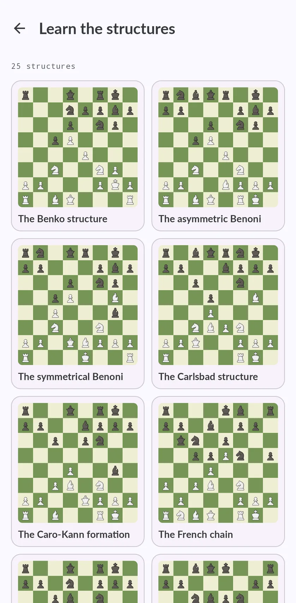

Estructuras de peones en ajedrez: las 25 que deciden el medio juego
Cuando se acaba la teoría de aperturas, los peones te dicen qué hacer. Cada estructura trae sus planes, sus rupturas y sus casillas buenas, y reconocerla es la mitad de encontrar la jugada. Aquí tienes las 25 que enseña Chess Coach y cómo practicarlas.

Por qué importan las estructuras de peones
Las piezas van y vienen; los peones se quedan. La estructura de peones decide qué columnas se abren, qué casillas pueden ocupar tus piezas para siempre y por dónde debe atacar cada bando. Dos posiciones de aperturas distintas con la misma estructura suelen pedir el mismo plan, y por eso los jugadores fuertes piensan en estructuras y no en órdenes de jugadas.
Las 25 estructuras
| Estructura | Cómo reconocerla |
|---|---|
| La estructura Benko | Las negras juegan sin peones en a ni en b. |
| La Benoni asimétrica | Un peón blanco en d5 trabado contra el de d6, con el peón negro de c5 al lado y el alfil negro en el fianchetto de g7. |
| La Benoni simétrica | Peones blancos en c4 y d5 contra los negros en c5 y d6, con la columna d trabada. |
| La estructura Carlsbad | Blancas con peones en d4 y e3 y mayoría en el flanco de rey; negras con c6, d5 y mayoría en el de dama. |
| La formación Caro-Kann | Peones blancos en c3 y d4, negros en c6 y e6. |
| La cadena francesa | Dos cadenas de peones trabadas en diagonal. |
| El centro cambiado de la francesa | Peones blancos en c3 y d4, negros en c6 y d5, y los peones de e ya cambiados. |
| La francesa con f6 | Un peón blanco aislado en d4 contra d5, y las negras sin peón f ni c: la columna f semiabierta y un peón solitario en e6. |
| El centro de la Grünfeld | Peones blancos en c3, d4 y e4, sin peón blanco en la columna b. |
| Los peones colgantes | Dos peones juntos en c5 y d5, sin vecinos a los lados y sin peones enfrente. |
| El erizo | Peones negros en a6, b6, d6 y e6, sin peón de c, y el enroque intacto en f7, g7 y h7. |
| El peón dama aislado | Un peón en d4 sin compañeros en las columnas c ni e, enfrente de un peón negro en d5 o de la casilla vacía. |
| El centro pequeño de c6-d6 | Las blancas tienen peones en c4 y e4 y ninguno en la columna d; las negras, en c6 y d6 y ninguno en la e. |
| El centro abierto tras el cambio | Peón negro en e5 frente a los peones blancos de c4 y e4, y la columna d entera sin peones. |
| La cadena de d5 contra e5 | Peones blancos en c4, d5 y e4 contra los negros de c7, d6 y e5. |
| El dúo de e5 y f5 | Centro trabado, d5 contra d6: las negras tienen la cadena d6–e5 y un peón en f5. |
| La carrera de los dos flancos | Centro trabado, d5 y e4 contra d6 y e5, con los peones c cambiados: las negras atacan en el flanco de rey y las blancas en el de dama. |
| La mayoría que crea un pasado | Un bando tiene más peones en un lado del tablero que el rival. |
| El ligado de Maróczy | Peones blancos en c4 y e4 que le quitan a las negras las casillas b5 y d5. |
| La cuña de d5 | Un peón blanco en d5 trabado contra el peón negro de d6, con otro peón negro en e5. |
| El centro pequeño de la Scheveningen | Las negras tienen los peones de d6 y e6 juntos y sin avanzar. |
| La casilla d5 en la siciliana | Las negras tienen peones en d6 y e5 y ya han cambiado el de c. |
| La formación eslava | Las blancas tienen d4 y e3 y se han quedado sin peón de c. |
| La española cerrada | Peones blancos en c3, d3 y e4; negros en a6, b5, c5, d6 y e5. |
| El muro de piedra | Peones en c6, d5, e6 y f5 formando un muro en las casillas blancas. |
Cómo practicarlas en Chess Coach
- Aprende la estructura. Cada una trae su teoría, los planes de blancas y de negras y una pregunta por bando para comprobar que la has entendido.
- Reconócela en partidas reales. El modo práctica te enseña posiciones de partidas reales: nombras la estructura y dices hacia dónde va la partida.
- Juégala. En cada estructura puedes jugar una partida normal desde el diagrama, con blancas o con negras, contra un rival que juega como una persona.

Qué es gratis
La casilla d5 en la siciliana es gratis: su teoría, sus preguntas, una partida desde el diagrama con cualquier color y sus 400 tácticas. El modo práctica y las otras veinticuatro estructuras son Premium.
Preguntas
¿Cuáles son las estructuras de peones más importantes?
¿Cuál es el plan contra un peón dama aislado?
¿Hace falta saber aperturas para entender las estructuras?
Sigue entrenando
Llévate el coach contigo
Empieza gratis en iPhone, iPad o Android. Sin anuncios, y sin suscripción para jugar, analizar o hacer el primer curso.
Inicia sesión y tus partidas, ratings y progreso te siguen al otro dispositivo.

La portada, en un iPhone. La misma app en Android y en iPad.